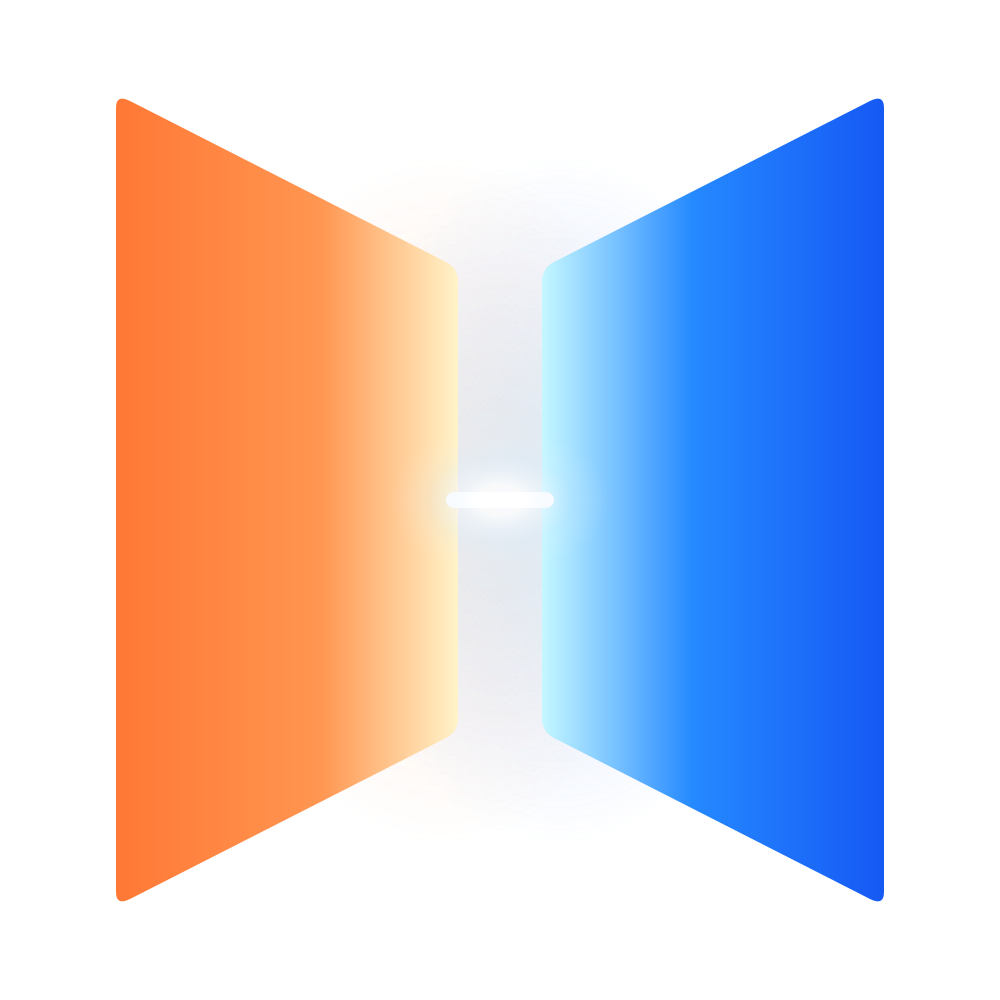

Skip to prototype

Miraya
/ Beam
PROPOSAL ONLY — NOT IMPLEMENTED
Design review · 29 Oct 2026
Mac experience
TV experience
Identity
App icons
Design system
Inspect state
Mac width
420 pt · standard
340 pt · compact
540 pt · expanded
Appearance
Light
Dark
Reset prototype
Advance simulation
Review controls · illustrative devices, content and metrics